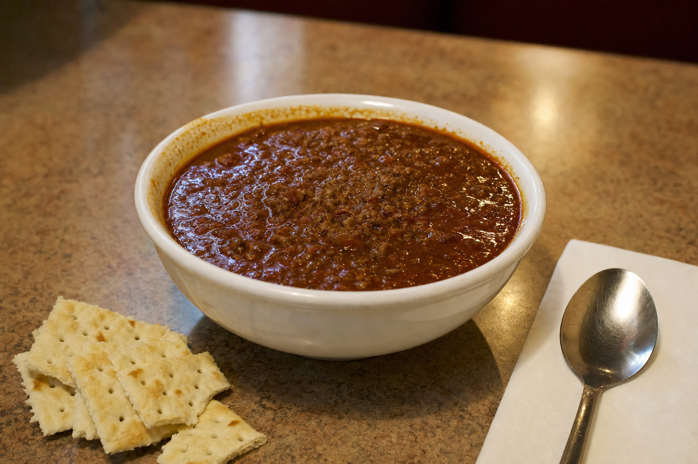
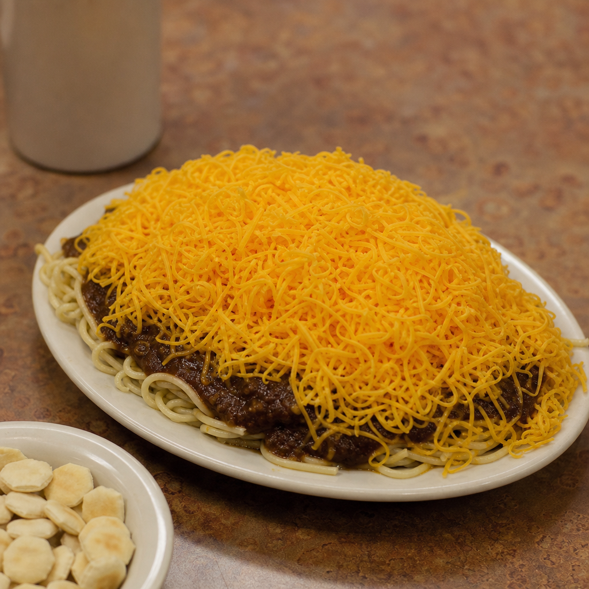
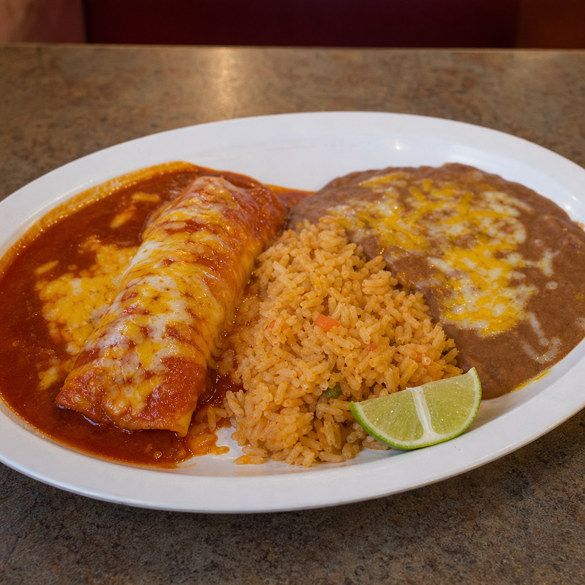
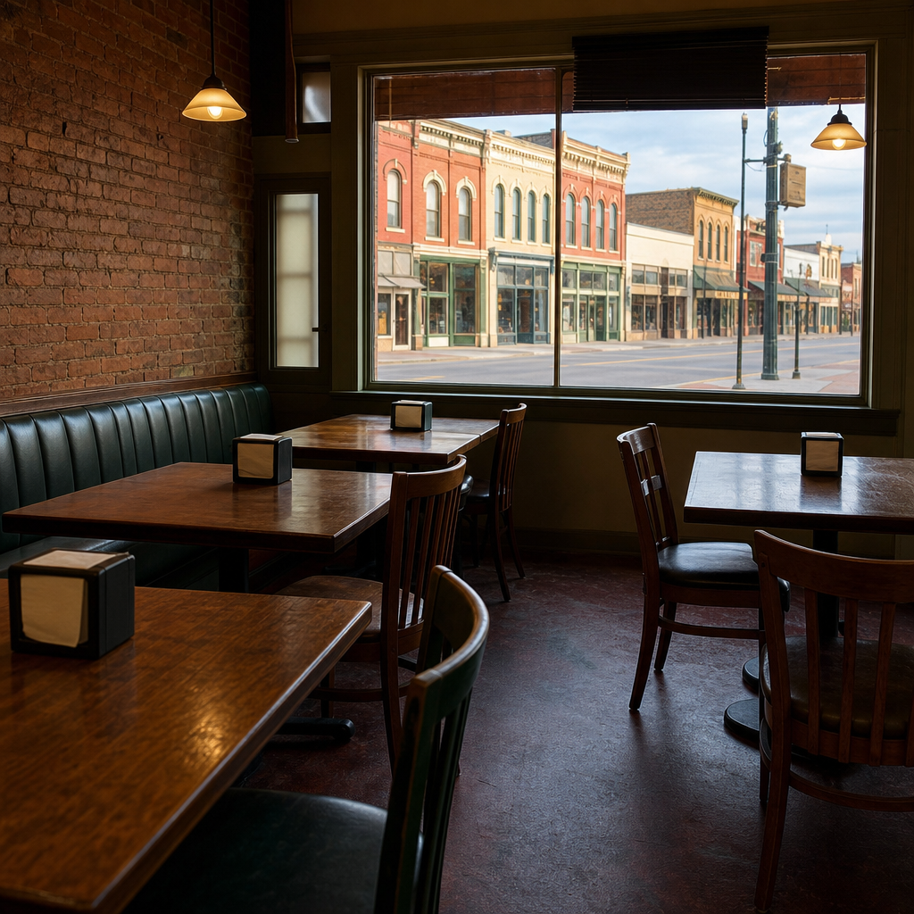

Two chilis. One family. Since 1981.
A Tex-Mex chili parlor on Mill Street, run by the Anderson family for over forty years. Texas chili and Cincinnati chili on the same menu, which almost nowhere does.
Mon
Kitchen open
Tue
$1 off all tacos
Wed
Kitchen open
Thu
Kitchen open
Fri
Kitchen open
Sat
Breakfast 9 to 2
Sun
Breakfast 9 to 2
Taco Tuesday and the weekend breakfast, nine to two, are the shop's own standing offers. The weekdays are shown as a shape for this concept; on the finished page this strip is the one block the kitchen updates, and it is the reason a family checks the site on a Wednesday.
The two chilis.
These are rival styles. Texas and Cincinnati do not agree about beans, about spice, or about whether chili is a bowl or a sauce. Bar-J serves both and lets you pick a side.

Texas
Coarse beef, chile heat, no beans in it and no argument about that. Eaten from a bowl with crackers, the way it was eaten in 1981.

Cincinnati
Thinner, sweeter, faintly cinnamon, poured over spaghetti and buried under shredded cheddar. If you have never had it this way, this is the one to try.
The rest of it.
-
The Texas Platter
The one the shop tells you to ask about, and has for years.
-
Chili con carne and queso
By the bowl, or over anything else on this list.
-
Chimichangas and enchiladas
Plates, not small plates. Nobody leaves hungry.
-
Fajitas and pollo loco
Marinated and char broiled, off the same grill since the eighties.
-
Texas fries and wing zings
What the bar end of the room orders.
-
Sopaipillas
Order them at the start. They take a minute and they are worth it.


The Anderson family, since 1981.
Forty-odd years of the same recipes in a room on Mill Street. Not a concept, not a chain, and not somebody's second location.
Kids are welcome and so is everybody else. If you came here as a child and are bringing your own now, you will recognise the chili.
Where
125 Mill Street, Suite 101Occoquan, Virginia 22125
Call or order
571-398-6294Before you come
Online ordering is up and running. For a big table on a festival weekend, call first.
Photography shown is illustrative art direction. The finished site would use photography of Bar-J's own kitchen and dining room. The Taco Tuesday offer, the Texas Platter, the weekend breakfast, the 1981 founding and the Anderson family are all from bar-jchili.com; the weekdays in the strip are shown as a shape for this concept rather than as a schedule. Opening hours are deliberately left off until they can be taken from the shop rather than from a listing site.